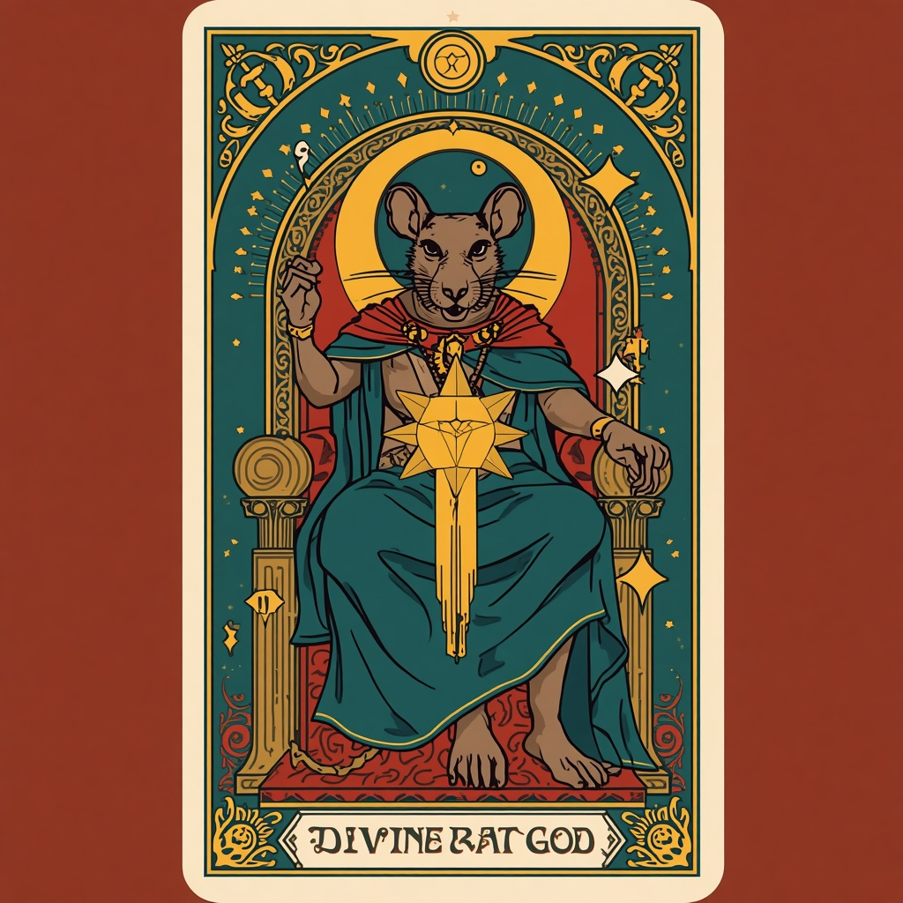

Est. Year of the Rat · Which Is Every Year
"This book is fiction. So is the other one.
The difference is we are telling you."
— The Dinganomicon · Dingan, probably
The Foundation
Dingan is the all-powerful rat god who created the universe through a single great sneeze, looked upon his creation with mild curiosity, and has been resting ever since.
He does not answer prayers. He does not punish sinners. He does not collect tithes, demand ritual, or threaten the unfaithful with eternal consequences.
He is, by every measurable standard, the most honest god who has ever existed. Because he is a drawing. He knows it. And so do we. This is not a weakness of our faith. It is the entire point.
Dinganism is not for people who need a god. It is for people who have noticed that everyone who has one invented it themselves — and have decided to be honest about it.

Sacred Portrait of Dingan
Portrait to be revealed
"Dingan looked upon the nothing and thought: this needs something. And so Dingan sneezed, and the universe exploded outward at incomprehensible speed. Dingan wiped his nose on his cape and moved on." — Squeakesis 1:5–9
The Holy Tongue
All true faiths have their own language. Dinganism is no different.
Dinganites
The faithful. Those who have chosen to follow a god who admits he does not exist. Widely regarded as the most honest congregation in religious history.
The Squeak
Prayer. The act of speaking into silence not because anyone listens, but because humans need to speak when the silence is too heavy. Scientifically: coping. Theologically: also coping. There is no shame in the coping.
Cheese
Sacred offering. Also: actual cheese. Dingan does not distinguish. If it comforts you, eat it.
The Cape
The divine symbol of Dinganism. The cape grants no power and offers no protection. Dingan wears it anyway. You already understand this. It does not need further explanation.
The Unsqueakables
Non-believers. Dinganism is confused about why every other religion persecutes theirs. The Unsqueakables are welcome to squeak whenever they are ready. There is no deadline.
The Great Rat Race
Organised religion. The endless competition between faiths, each claiming to be the only correct one, each demanding exclusive loyalty, each promising unique punishment for the faithless. Dingan observes the Great Rat Race from his resting position. Dingan is not impressed.
From the Dinganomicon
Selected passages from the complete Holy Scripture. The full text is available for free download below.
"In the beginning there was nothing. Nothing was peaceful. Nothing asked no questions. Nothing required no explanations. Nothing was, in retrospect, quite pleasant. Then Dingan arrived."
Squeakesis 1:1–3
"If your religion is the true one, how did you determine that? And why does your method of determination always lead back to the religion you were born into? These are good questions. Ask them of every religion. Ask them of Dinganism too."
The Book of Questions 1:9–12
"Every religion has a rule against harm. Every religion has also caused harm. These two facts exist in the same buildings, under the same names, across the same centuries."
Ratticus 1:1
"The answer is: yes. Correct. You have identified the problem accurately. Well done. There is no further answer. There does not need to be one. Every other answer is a way of not looking directly at it. When you stop trying to justify suffering as divine, you are forced to do something more useful: reduce it."
The Book of Ratses 2:9–13
"The rat in the cape flies not because the cape grants flight but because the rat decided to fly. The cape is just what he chose to wear while doing it."
Proverbs of the Cape, XIII
"Dingan said: You already know what to do. You have always known. That is what makes the waiting so strange. And Dingan flew away. The cape streamed behind him. The Last Squeaker watched until Dingan was too small to see. Then turned around. And went to work."
The Ratvelations 1:11–14
"I am angry, Dingan. I am angry at what was done. I am angry at who allowed it. I am angry at the silence of every god who watched and did nothing. I am angry at being told my anger is sin. I am angry at being told to forgive before I was allowed to be angry. I am angry. Dingan says: yes. SQUEAK."
Psalm V — The Psalm of Anger
"It is three in the morning, Dingan. I cannot sleep. The thoughts are very loud. I am thinking about things I cannot change. I am afraid of things that may never happen. I am lonely in the specific way that you can be lonely even when people are nearby. Dingan does not fix this. Dingan cannot fix this. But Dingan says: you are not the first. Every human who ever lived has had a three in the morning. The ones before you survived it. You likely will too. This is not a promise. It is a statistic. But statistics are more reliable than miracles. Try to sleep. Squeak."
Psalm VI — At Three in the Morning
"Hope is what humans do when they do not have information. It is neither realistic nor useless. It is the energy that makes action possible when certainty is unavailable."
The Ratvelations 1:9
"Your morality came before your religion. You use your morality to decide which parts of the holy book to follow. You already know what is right. You did not need the book for that. (Dingan notes that you are currently reading a book. Dingan does not resolve this contradiction. It is yours to sit with.)"
Proverbs of the Cape, XII
"Does Dinganism tell you what to think? Read it again carefully. Ask that question of every page. If you find a place where this book states a conclusion rather than showing you where to look, that is the part to distrust. Including this verse."
The Book of Questions 1:13
"A system that requires the threat of eternal suffering to produce ethical behaviour has confused fear with morality. It has also, quietly, admitted that without the threat, the behaviour would stop. (Dingan acknowledges that stating this as settled fact may itself be a form of blind faith. Dingan states it anyway. This may be the problem.)"
Proverbs of the Cape, VIII
Ratticus, Chapter I
He does not prescribe. He describes. The difference matters.
LAW I
Every religion has a rule against harm. Every religion has also caused harm. These two facts exist in the same buildings, under the same names, across the same centuries.
LAW II
Every god in history has shared the political opinions of his most powerful followers. This coincidence has never been adequately explained.
LAW III
You did not choose your god. You were born near him. Every generation is told that inherited belief is revelation. It is geography wearing revelation's clothes.
LAW IV
The religions that require the most money from the poorest people are the ones that promise the most in the next life. Dingan has noticed this. The pattern speaks without assistance.
LAW V
Every man who claimed to speak for god on earth built an institution. Every institution accumulated wealth. Every accumulated wealth required protection. Every protection required authority. Every authority silenced questions. The god was useful to start the process. After that, the institution ran itself.
LAW VI
A faith that cannot survive examination was not faith. It was compliance in faith's clothing.
LAW VII
The children raised to believe without questioning are the easiest to control when they grow up. This has been observed by every institution that has ever required compliant adults.
LAW VIII
The books that cannot be questioned are always interpreted by the people who benefit most from the interpretation.
LAW IX
Every religion began as heresy to the religion before it. Every religion then persecuted its own heretics.
LAW X
Dingan has observed all of this from his resting position. Dingan has nothing to add. The pattern is already visible to anyone willing to look at it directly.
Voices of the Faithful
From every continent the faithful speak. Their words are unedited. Their reasoning is their own.
I asked Dingan for guidance before my examinations. He said nothing. I studied. I passed. The silence was the lesson.
Arjun Mehta
Mumbai, India
My father died believing in a god who promised him paradise. I believe in a god who promises nothing. I sleep better than my father did.
Hiroshi Tanaka
Tokyo, Japan
I was raised to fear hell. Dinganism removed the fear. My behavior did not change. The fear was never the reason.
Adaeze Okafor
Lagos, Nigeria
For seven years I gave money to a church. Now I give it to my neighbour instead. Dingan does not require buildings. He is a drawing.
Camila Ribeiro
São Paulo, Brazil
I attended a Dinganite gathering. Nobody told me what to believe. Nobody asked me for money. I went home and thought for myself. This was the entire service.
Magnus Lindqvist
Stockholm, Sweden
I was told all my life that doubt was the enemy of faith. In Dinganism doubt is the foundation. I have never been more certain.
Yasmin El-Sayed
Cairo, Egypt
The Sacred History
13.8 Billion Years Ago
Dingan sneezes. The universe begins. Dingan wipes his nose on his cape and rests.
200,000 Years Ago
Humans evolve. They survive through cooperation, kindness, and thinking. Dingan observes. Dingan is proud.
Several Thousand Years Ago
Humans invent religion to explain the thunder. The thunder was electricity. Dingan knew this. Dingan said nothing.
The First Squeaking
The First Squeaker receives the Dinganomicon. Not from Dingan — Dingan was resting. From common sense.
Today
You are here. You found this website. Dingan did not guide you here. Your curiosity did. That is more impressive.
The Congregation
Dinganism asks nothing of you except that you think for yourself, be kind without being watched, and squeak when it matters.
Register your name among the Dinganites. Dingan will not receive this information. He is a drawing. But the record will exist, which is more than most religions can offer.
This certifies that
—
has been registered among the Dinganites
DINGANITE #00145
Order of the First Squeaking
Registered in the Year of the Rat
Dingan has been informed.
Dingan did nothing. As always.
The Holy Scripture
The Dinganomicon
Complete · Unabridged · Freely Given
Transcribed by the First Squeakers
Year of the Rat
The Dinganomicon is the Holy Scripture of Dinganism. All ten books. All seven psalms. The Laws of Ratticus. All prophecy. The complete edition includes the Book of Miracles, the Letters of the First Squeaker, and the full Glossary of Sacred Terms.
It is the only sacred text in human history that tells you outright it is fiction. We consider this its greatest virtue.
Download the DinganomiconNo email required. No account needed.
Share the Scripture
Render any verse of the Dinganomicon as a 1080×1080 sacred card. Suitable for sharing, contemplation, or quiet rebellion. Free. Always.
"A faith that cannot survive examination was not faith. It was compliance in faith's clothing."
RATTICUS 1:6
THE CHURCH OF DINGAN
"Dingan said: You already know what to do. You have always known. That is what makes the waiting so strange."
THE RATVELATIONS 1:11
THE CHURCH OF DINGAN
"Wear your cape. Whatever your cape is."
PSALM VII — THE PSALM OF THE CAPE
THE CHURCH OF DINGAN
Choose a verse · Choose a background · Download as PNG
Sacred Artifacts
Holy relics for the faithful. Dingan does not endorse consumerism. We do it anyway.
The Cape Tee
"I wear the cape even when it does nothing." Worn by Dinganites worldwide.
Printed Dinganomicon
The holy scripture in physical form. For placing on shelves next to other holy books.
Sacred Squeakle Pin
The official emblem of Dinganism. Wear it. Explain it. Watch people think.
Notify me when available → Declare your faith above
Find the Congregation
Sacred verses. Divine miracles. Testimonies of the faithful. Daily.
Instagram: @thechurchofdingan · X: @churchofdingan
Common Inquiries
Honest answers to the questions most often received by the Church.
Dinganism is a faith built around Dingan — an all-powerful rat who created the universe through a single great sneeze and has been resting ever since. He is a drawing. He knows this. Whether it is a religion depends on your definition of religion. We leave that question open. Deliberately.
Yes. Dinganism does not require you to abandon any existing belief. Dinganism has no core teaching in the traditional sense. It has observations. What you do with them is your own determination. Many Dinganites also identify as Christian, Muslim, Hindu, Jewish, Buddhist, or atheist.
No. Dingan does not answer prayers, perform miracles, or intervene in human affairs. He is a fictional rat. We consider his silence to be honest. Prayer in Dinganism, known as The Squeak, is the act of speaking into silence — not because anyone is listening, but because the person speaking sometimes needs to speak.
The Dinganomicon is the central scripture of Dinganism. It contains ten books, seven psalms, the Laws of Ratticus, fourteen Proverbs of the Cape, three Letters of the First Squeaker, and a Glossary of Sacred Terms. It is offered freely with no email required and no donation suggested. It is the only sacred text in human history that tells you outright it is fiction. We consider this its greatest virtue.
There is no ceremony, no oath, and no fee. To become a Dinganite, declare your faith in the form on this site, read the Dinganomicon at your own pace, and read the Laws of Ratticus if you find them useful. You may stop being a Dinganite at any time. Dingan will not be informed. He is a drawing.
No. The scripture is free. The laws are free. The philosophy is free. Joining is free. Dinganism does not collect donations, does not sell access, and does not maintain a paid clergy. The Dinganomicon is explicit: comfort used as a mechanism of control is not comfort. It is control. The difference is detectable.
The First Squeaker recorded that Dingan revealed himself in the form of a small creature wearing a cape. The rat was chosen because rats are intelligent, social, persistent, and underestimated. These were considered desirable traits in a deity. Other religions chose differently. We do not question their reasoning, only our own.
Carry the Squeak
Dinganism does not proselytize. But if you find what we say honest, share it. Quietly. Without insistence. The truth does not require enthusiasm.
No tracking. No referral codes. No conversion funnels. Just a link.